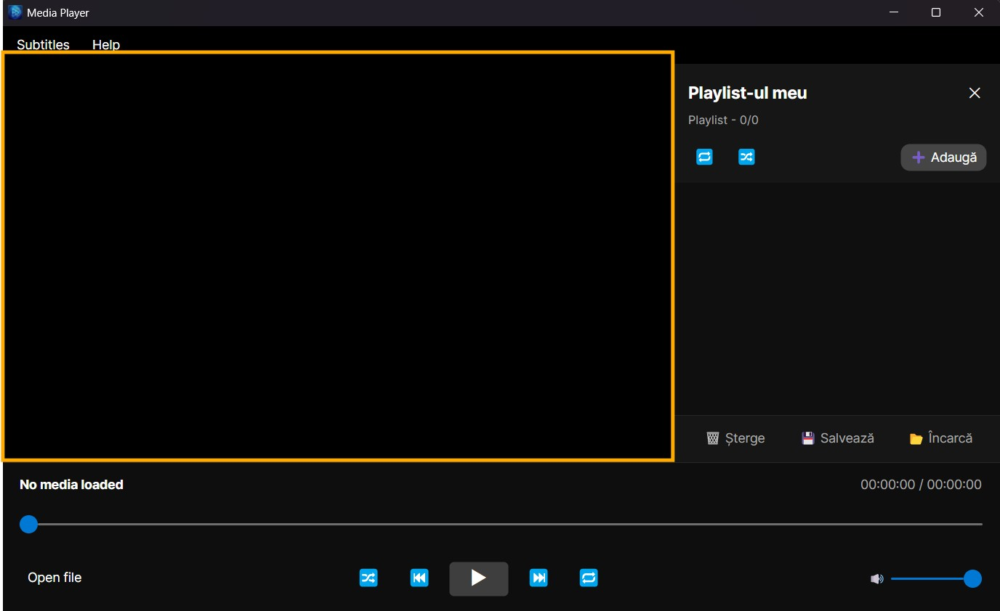
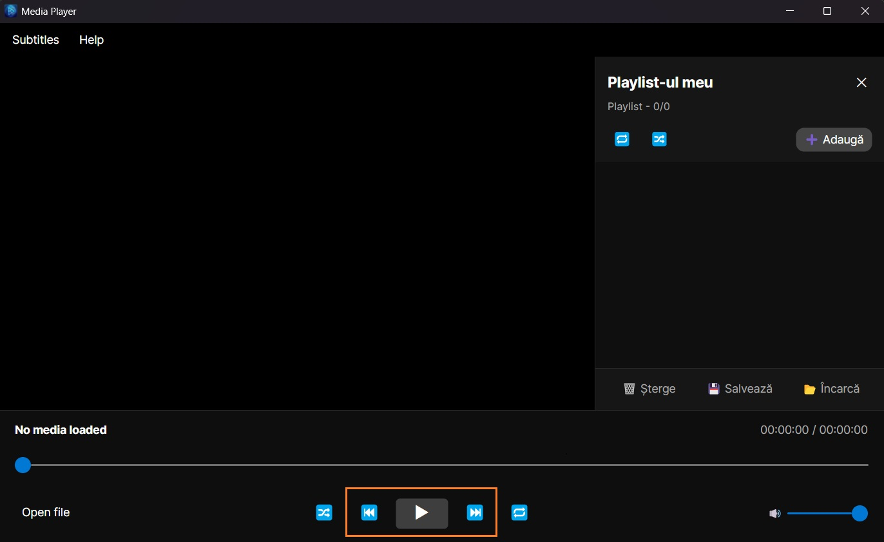
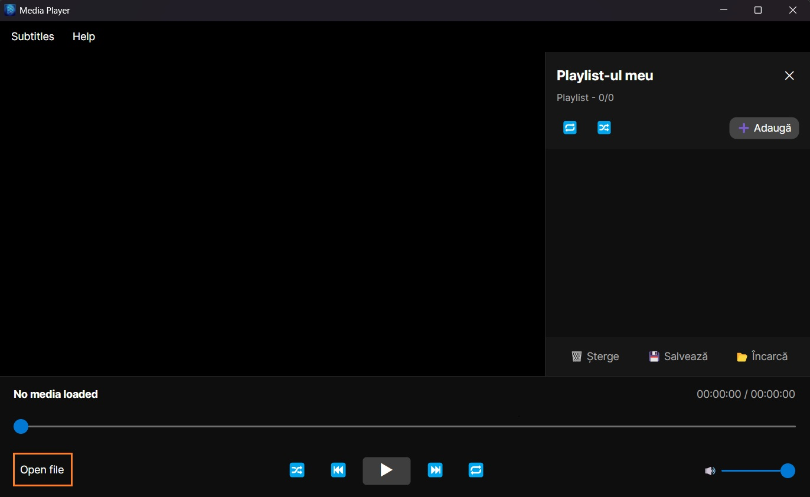
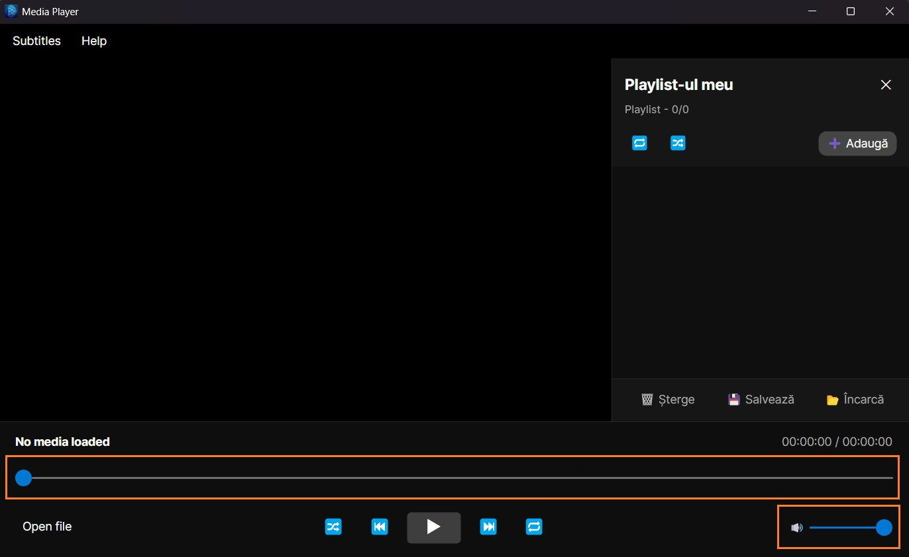
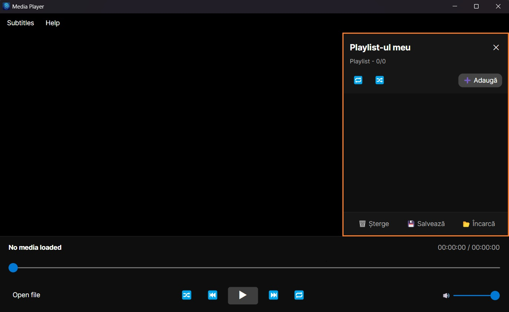
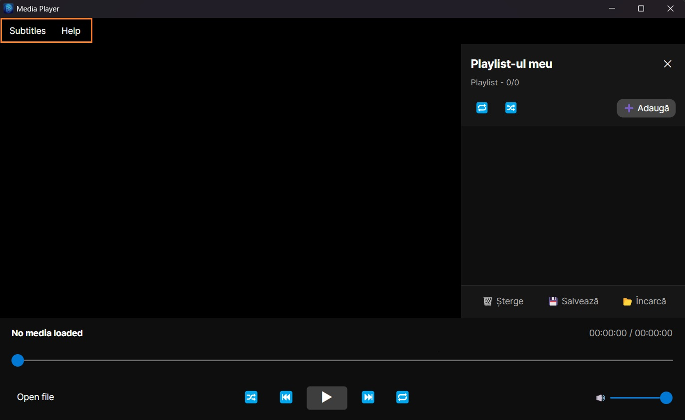

Pentru lansarea aplicatiei, utilizatorul trebuie sa execute fisierul principal al programului: AIMediaPlayer.exe
Dupa pornire, pe ecran va aparea fereastra principala a aplicatiei, care contine:





